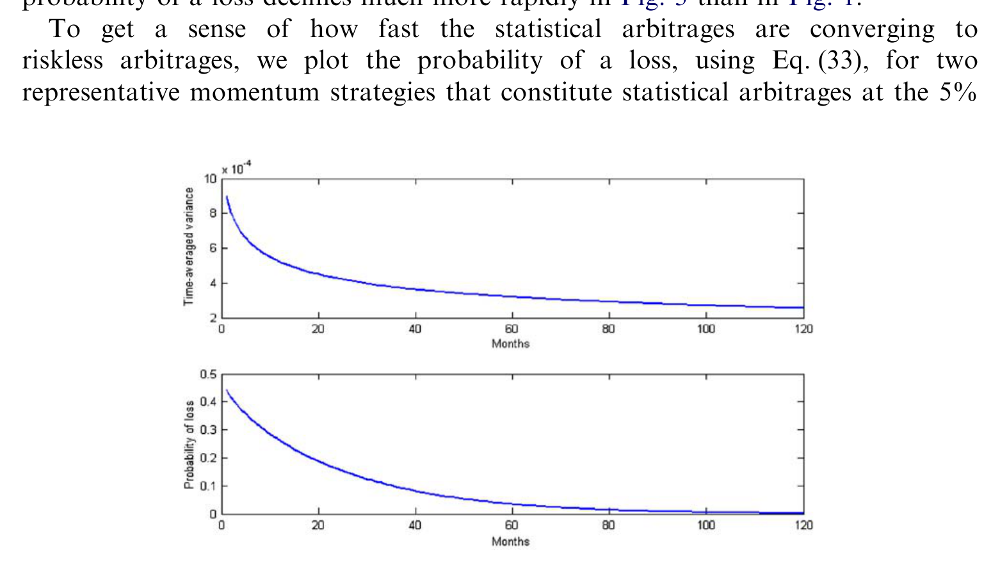
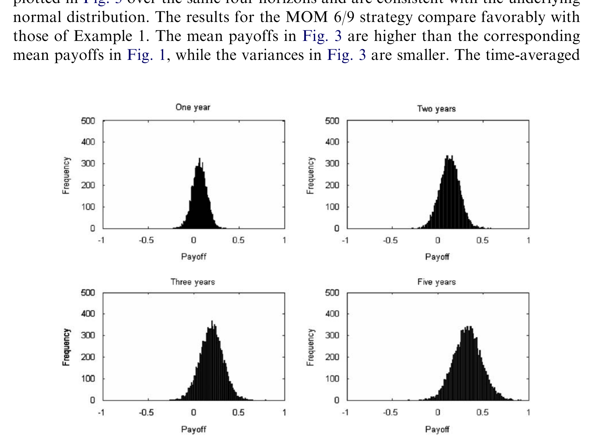
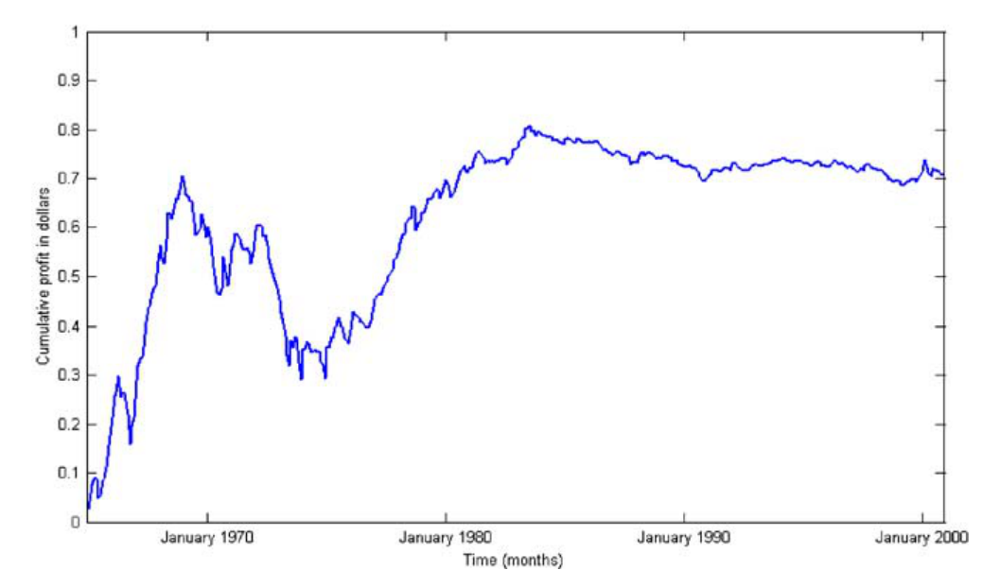
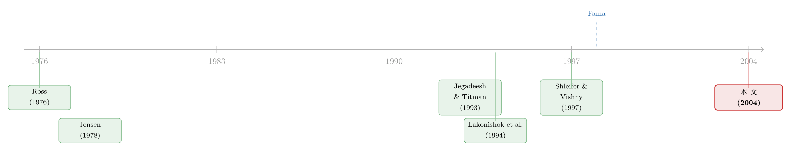

无风险的套利，要等多久才显形？——一把绕开「联合假设」的市场有效性尺子
本文读的是 Hogan, Jarrow, Teo & Warachka (2004, Journal of Financial Economics)：他们提出「统计套利 (statistical arbitrage)」这个概念——一种在长期里几乎稳赚不赔的交易机会，它的定义【不依赖任何均衡模型】，因此其存在本身就足以否定市场有效。用这把尺子去量，动量与价值策略都构成统计套利，且这个结论在扣除交易成本、剔除小盘股之后依然成立。
1 一个让所有「异象」研究都如鲠在喉的问题
先从一桩学术界的老尴尬讲起。
过去几十年，金融学者发现了一大堆「异象 (anomaly)」：Jegadeesh 和 Titman (1993) 说，买过去的赢家、卖过去的输家，一年能挣 12% 的超额收益；Lakonishok、Shleifer 和 Vishny (1994) 说，买价值股、卖魅力股，也能稳稳跑赢。证据越堆越多，看上去市场有效假说 (efficient markets hypothesis) 摇摇欲坠。
但 Fama (1998) 不紧不慢地泼了一盆冷水：你们说的「超额收益」，都是相对某个均衡模型（比如 CAPM）算出来的。如果收益异常，那到底是市场无效，还是你那个模型本身就错了？这就是著名的联合假设难题 (joint hypothesis problem)——任何一次市场有效性检验，其实都在同时检验「市场有效」与「你假设的定价模型正确」两件事，二者纠缠在一起，无法分开。于是只要有人拿出异象，捍卫有效市场的人永远可以说一句：「不是市场错了，是你的模型设定错了。」这盘棋，谁也将不死谁。
更糟的是，Fama 还顺手补了一刀：长期收益（五年以上）的检验结果对统计方法极其敏感，换个方法结论就翻。所以那些靠长期异常收益否定市场有效的研究，结论都得打个问号。
接着，一个自然的问题就浮出来了：有没有一种检验，根本不需要任何均衡模型，从而绕开联合假设这堵墙？
这正是本文的全部野心所在。
2 把「套利」从横截面搬到时间轴上
要绕开均衡模型，作者的思路出奇地朴素：回到「套利 (arbitrage)」本身。
标准的无套利定价理论有一条铁律——套利机会与有效市场不能共存（见 Jensen, 1978）。这条铁律的妙处在于：判断一个机会是不是套利，完全不需要任何定价模型，你只要看现金流就够了。如果存在一个零成本、却能稳赚不赔的策略，市场就不可能处在任何均衡里，自然也就谈不上有效。
但纯粹的无套利（标准套利）太苛刻了，现实中的异象策略并不是绝对稳赚——它们短期会亏。于是作者做了一件关键的事：把 Ross (1976) 套利定价理论 (APT) 里那个「横截面极限」的套利，平移成一个「时间序列极限」的套利。
这个类比是全文的灵魂。Ross 的 APT 说：当资产数目趋于无穷，横截面上的特质风险可以被分散掉，于是定价误差必须消失。本文说：当交易时间趋于无穷，时间序列上的随机波动可以被「时间分散」掉，于是一个持续的盈利机会必然显形为无风险利润。一个在「资产数」上取极限，一个在「时间」上取极限。
他们把这个时间序列版本的套利叫做统计套利 (statistical arbitrage)。
3 用三个例子，逼出统计套利的定义
作者没有一上来就甩定义，而是像剥洋葱一样用三个例子把直觉逼出来。这一节值得一步步跟着走。
例 1（买入持有一只股票）。 在标准 Black-Scholes 经济里，股价服从几何布朗运动，借钱买一股并持有，累计交易利润为
$$V(t)=S_0\big(e^{[a-\sigma^2/2]t+\sigma W_t}-e^{rt}\big),\qquad V_0=0.$$
它的贴现累计利润 \(u(t)=V(t)/B_t\) 的期望和方差都随时间趋于无穷：
$$E^P[u(t)]=S_0\big[e^{(a-r)t}-1\big]\to\infty,\qquad \mathrm{Var}^P[u(t)]=S_0^2 e^{2(a-r)t}\big[e^{\sigma^2 t}-1\big]\to\infty.$$
关键在于：连时均方差 (time-averaged variance) \(\mathrm{Var}^P[u(t)]/t\) 也炸向无穷。风险随时间越滚越大——这不是套利。
例 2（带漂移的布朗运动）。 设贴现累计利润 \(u(t)=\alpha t+\sigma W_t\)，则 \(E^P[u(t)]=\alpha t\to\infty\)，\(\mathrm{Var}^P[u(t)]=\sigma^2 t\to\infty\)，而时均方差恒等于常数 \(\sigma^2\)，不消失。盈利在涨，可单位时间的风险纹丝不动——还不是套利。
例 3（真正的统计套利长这样）。 现在把每一个交易区间 \([t_{k-1},t_k]\) 的贴现利润增量写成
$$u(t_k)-u(t_{k-1})=m+\sigma z_k,$$
其中 \(m,\sigma>0\)，\(z_k\) 独立同分布、均值为 0，但方差等于 \(1/k\)——也就是噪声随时间越来越小。累加起来：
$$u(t_n)=\sum_{k=1}^{n}\big[u(t_k)-u(t_{k-1})\big]=mn+\sigma\sum_{k=1}^{n}z_k,$$
于是
$$E^P[u(t_n)]=mn\to\infty,\qquad \mathrm{Var}^P[u(t_n)]=\sigma^2\sum_{k=1}^{n}\frac{1}{k}\to\infty,$$
两者都发散。但真正关键的一步在于那个时均方差：
$$\frac{\mathrm{Var}^P[u(t_n)]}{n}=\frac{\sigma^2}{n}\sum_{k=1}^{n}\frac{1}{k}\;\longrightarrow\;0\quad(n\to\infty).$$
调和级数 \(\sum 1/k\) 只以 \(\ln n\) 的速度爬升，被 \(n\) 一除就归零了。这意味着：盈利在线性累积，而单位时间承担的风险却在悄悄蒸发。时间替你完成了「分散」，就像 APT 里资产数目替你分散掉特质风险一样。这，才是统计套利。
把这三个例子的共性提炼出来，就是论文的核心——定义 1：一个零初始成本、自融资的策略 \((x(t):t\ge 0)\)，其贴现累计价值 \(u(t)\) 若满足
$$u(0)=0,$$ $$\lim_{t\to\infty}E^P[u(t)]>0,$$ $$\lim_{t\to\infty}P\big(u(t)<0\big)=0,$$ $$\lim_{t\to\infty}\frac{\mathrm{Var}^P[u(t)]}{t}=0\quad\text{if } P\big(u(t)<0\big)>0\ \ \forall\, t<\infty,$$
则称其为统计套利。
四个条件，翻成大白话：(1) 不花钱、自己养活自己；(2) 长期期望利润为正；(3) 亏损概率最终趋于零；(4) 只要任何有限时点都还有亏损可能，那时均方差就必须归零。第四条是真正把它和「例 1、例 2 那种伪机会」区分开的那道闸门——它也恰好回应了 Shleifer 和 Vishny (1997)《套利的极限》里的担忧：套利者最怕的是中途的波动把他打爆，而统计套利保证了这种波动会随时间稀释。标准套利不过是统计套利的一个特例（亏损概率在有限时间内就变成零的那种）。
4 模型：把统计套利「翻译」成几个可估的参数
定义很美，但怎么拿数据去检验？这是第 3 节做的事，也是本文方法论的精华。
作者给贴现累计交易利润的增量 \(\Delta u_i = u(t_i)-u(t_{i-1})\) 设了一个简洁的设定（取等距时间间隔 \(\Delta=1\)）：
其中 \(z_i\) 独立同分布、服从标准正态。把增量累加，得到累计贴现利润
$$u(t_n)=\sum_{i=1}^{n}\Delta u_i=\mu\sum_{i=1}^{n}i^{\theta}+\sigma\sum_{i=1}^{n}i^{\lambda}z_i.$$
接下来是漂亮的一步：把定义 1 的四个抽象极限条件，翻译成对参数 \((\mu,\theta,\lambda)\) 的几个不等式。
期望项 \(E^P[u(t_n)]=\mu\sum i^{\theta}\)，要发散且为正，需要 \(\mu>0\)（且 \(\theta>-1\)）。方差项 \(\mathrm{Var}^P[u(t_n)]=\sigma^2\sum i^{2\lambda}\)，其时均值 \(\sigma^2\sum i^{2\lambda}/n\) 当且仅当 \(\lambda<0\) 时趋于零——这就是第四条。至于亏损概率趋零（第三条），需要期望增长得比标准差快，化简后是 \(\theta>\lambda-\tfrac12\)。于是：
$$\boxed{\ \text{统计套利}\iff \mu>0,\ \ \lambda<0,\ \ \theta>\lambda-\tfrac12.\ }$$
这就把一个哲学味十足的「长期无风险盈利」问题，钉死成了三个可以用极大似然估计、再做假设检验的参数限制。
作者据此区分了两个版本：约束均值模型 (constrained mean, CM) 令 \(\theta=0\)（期望利润恒定），此时统计套利的条件干脆利落地缩成两条——\(\mu>0\)（长期期望利润为正）且 \(\lambda<0\)（增量波动随时间衰减）；非约束均值模型 (unconstrained mean, UM) 则放开 \(\theta\)，允许期望利润随时间变化。检验「无统计套利」这个原假设时，他们对各个不等式分别构造 \(t\) 统计量，再用 Bonferroni 不等式把联合 \(p\) 值「保守地」界住——这意味着检验是偏向于接受「无套利、市场有效」的（后文的模拟也证实了这一点）。换句话说，凡是它认定的统计套利，都是顶着一把「宁可放过、不肯错杀」的尺子被揪出来的。
请特别留意这套方法和传统 alpha 检验的根本区别：标准做法是回归出一个风险调整后的截距 \(\alpha\)，但「风险调整」这一步就预设了一个均衡模型，于是又掉回联合假设的陷阱里。而统计套利检验直接分析自融资策略的美元计价增量利润，全程不碰任何定价模型。更微妙的是，作者证明 alpha 检验（对均值做 \(t\) 检验）根本侦测不到统计套利——因为那等价于假设波动率的变化率 \(\lambda=0\)，恰好违反了至关重要的第四条。
5 数据与主要结果：动量和价值，都「漏」了
为了把数据挖掘 (data mining) 的嫌疑降到最低，作者刻意不去发明新策略：动量策略照搬 Jegadeesh-Titman (1993)，价值（逆向）策略照搬 Lakonishok et al. (1994)。样本期为 1965 年 1 月 至 2000 年 12 月，完整覆盖了这两篇原始论文的区间。每个策略都把 $1 恒定地放在「多头减空头」的风险头寸上，盈利则投进货币市场账户——这一招本身就在压低时均方差，同时干净地排除了 Duffie (2001) 所说的「加倍下注 (doubling)」策略。
结果相当扎眼：
- 动量：考察的
16个动量策略中，6个在5%水平上构成统计套利，另有3个在10%水平上。以「按过去 6 个月收益做多最高十分位、做空最低十分位、持有 12 个月」的 MOM 6/12 策略为例，其亏损概率在仅仅89个月之后就跌破了1%。 - 价值：
12个价值策略中5个在5%水平上构成统计套利。用过去三年销售增长率、持有一年的那个策略，亏损概率在79个月后跌破1%。
下面这张图把统计套利的两个核心条件画在了一起——亏损概率单调下行、时均方差持续衰减，正是定义里第三、四条在数据上的具体显形。

Figure 4: Probabilityof a loss andtime-averaged variancefor the momentumstrategy(MOM6/12)that
如果只看累计利润的轨迹，那条曲线则像一道稳稳向上的斜坡（见图 3），盈利一点点累积，而非靠某几次暴利撑场面。

Figure 3: Discounted cumulative trading profits from a momentum (MOM 6/9) trading strategy. The
（关于动量收益究竟由谁、如何产生，可参见《动量到底是谁干的？——把成交单拆成大小两摞来看》；而价值、规模、动量在风险框架下的命运，可参见《会「看天」的 beta：当风险收编了价值与规模，动量却躲进了商业周期》。）
6 然后，是一连串「真能落地吗」的拷问
一个能赚钱的策略，最怕的就是「纸面上的钱」。作者于是一关一关地往里加摩擦。
交易成本。 他们算出每个组合的换手率，配上 Chan 和 Lakonishok (1997) 估计的往返交易成本，把增量利润逐期向下调。除此之外，还按 Alexander (2000) 的做法加进了四种额外摩擦：多空双边的保证金要求、保证金账户利息缩水、空头的额外流动性缓冲、以及高于存款利率的借款利率。在这套「拟真」环境里，5% 水平上的 11 个统计套利，仍有 9 个屹立不倒。
小盘股。 异象常被怀疑是小盘股在作祟（Hong et al., 2000；Mitchell & Stafford, 2000）——它们交易成本高、流动性差。作者把市值低于 NYSE 50% 分位的股票全部剔除，结果动量组合几乎全数（只少一个）、价值组合 12 个里 7 个仍在 5% 水平上通过统计套利检验。结论不是小盘股撑起来的。
CM 还是 UM？ 该用恒定期望利润 (CM) 还是时变期望利润 (UM)？四项独立检验一致指向 CM：在 15 个达到统计套利的策略里，只有 1 个的期望利润衰减率 \(\theta\) 显著为负；两个模型的样本内拟合（RMSE）、残差平方和几乎无差别；似然比检验也无法拒绝「期望利润恒定」。UM 反而因为多塞了一个参数、把信息摊薄，削弱了检验的功效。
模拟稳健性。 作者还往假设的利润过程里掺入自相关、跳跃、参数非平稳，再跑检验。模拟显示，该检验系统性地偏向于接受「无统计套利」的原假设。换句话说，它是个保守的检验——它说有，那多半是真有。
7 反转：当同一把尺子量向「规模因子」
故事到这里，似乎是异象的全面胜利。但真正体现这把尺子价值的，是它也会说「不」的时候。
作者把同样的方法对准了 Fama-French (1993) 的规模因子 SMB（小减大）。SMB 在样本期里的 \(t\) 统计量告诉你：做多小盘、做空大盘，期望利润为正。按传统 alpha 检验，这又是一个「异象」。
可统计套利检验给出的答案是：SMB 不构成统计套利。 它的累计利润曲线（见图 8）在 1980 年代初之后就失去了那种稳定上行、风险递减的特征。这恰好印证了金融学界一个流传已久的判断——规模效应在 1980 年代初之后就消失了。

Figure 8: Cumulative trading profits from $1 invested in the Fama and French (1992) Small Minus Big
这个反转之所以重要，是因为它说明统计套利检验不是一台只会喊「异象成立」的复读机：同样的数据、同样的方法，对动量和价值说「是」，却对规模说「不是」。一把会拒绝的尺子，才是一把可信的尺子。
8 文献脉络
把这条线索拉直来看，统计套利是几股思想汇流的产物。
源头是 Ross (1976) 的套利定价理论——它教会我们如何在不指定均衡的前提下，用「极限套利」约束价格。与此并行，Jensen (1978) 立下了「经济交易利润的存在即否定市场有效」这条判据。进入 90 年代，实证派抛出了一个又一个异象：Jegadeesh 和 Titman (1993) 的动量、Lakonishok、Shleifer 和 Vishny (1994) 的价值/逆向，把市场有效假说逼到墙角。然而 Fama (1998) 用联合假设难题与「长期收益对方法敏感」两记重拳，又把战局拉回僵持。与此同时，Shleifer 和 Vishny (1997) 提醒人们：现实中的套利是有风险、有极限的。

本文 (Hogan et al., 2004) 正是站在这个十字路口上：它接过 Ross 的「极限套利」思想，把它从横截面平移到时间轴，造出一个不依赖均衡模型、因而绕开联合假设的检验；同时用「时均方差归零」这一条，正面回应了 Shleifer-Vishny 对套利风险的担忧。它既是异象文献的延续，也是无套利市场有效性检验（如 Kamara & Miller, 1995 对看跌-看涨平价的检验）在时间维度上的推广。
值得一提的是，统计套利这个概念后来在实证交易里开枝散叶，最典型的就是配对交易——同一思想的另一种落地（参见《赢家做空，输家做多：一条简单到「不该」赚钱的套利规则》）。而「市场究竟要多久才把异象消化掉」这个问题，也呼应了《市场要多久才「想明白」？——给效率装上一只秒表》。
9 评论与延伸（Q&A + 研究方向）
(a) 几个可能的疑问
Q：统计套利和标准的无风险套利，到底差在哪？
差在「会不会亏」这件事上。标准套利在某个有限时点之后亏损概率就是零，绝对稳赚；统计套利允许任何有限时点都还有亏损可能，只要求亏损概率在无穷远处趋于零、且时均方差归零。两者只隔着一个 \(\varepsilon\) 的亏损概率——标准套利是统计套利的极限特例。
Q：它真的「绕开」了联合假设吗，还是只是把模型假设藏进了别处？
它确实不需要任何资产定价/均衡模型——判据只看自融资策略的美元增量利润。但它并非毫无假设：它假设了利润增量的统计过程（那个 \(\mu i^\theta+\sigma i^\lambda z_i\) 的设定）。所以严格说，它把「定价模型的联合假设」换成了「数据生成过程的统计假设」。好在作者用模拟检验了对自相关、跳跃、非平稳的稳健性，且检验偏保守，这层假设的代价被压得比较低。
Q：第四条「时均方差归零」为什么是灵魂？
因为它正是区分「真机会」与「伪机会」的闸门。例 1、例 2 都满足期望利润为正，但时均方差不降反升或恒定——风险没被时间稀释，这种「盈利」随时可能被一次大波动吞掉。只有时均方差归零，才意味着时间在替你做分散、夏普比率随时间单调上升，长期看才真正「无风险」。
Q：传统的 alpha 检验为什么抓不到统计套利？
因为对均值做 \(t\) 检验，等价于默认波动率的变化率 \(\lambda=0\)，而这恰好违反了「\(\lambda<0\)」这条核心条件。alpha 检验只盯着「期望收益是否为正」，完全看不见「风险是否随时间衰减」这第二个维度——而后者才是统计套利的命门。
Q：既然检验偏向接受「市场有效」，那找到统计套利会不会只是运气？
模拟显示该检验系统性地偏保守（容易漏报、不易误报），加上结论在扣交易成本、剔小盘股、bootstrap 重排序后都稳健，运气解释很难成立。更何况它对 SMB 给出了「否」——一个会拒绝的检验，比一个只会肯定的检验可信得多。
Q：那这是不是说市场就是无效的、可以躺着赚钱？
要谨慎。作者自己强调，这是事后 (ex post) 在样本期里检验统计套利是否存在，而非事前 (ex ante) 保证未来可复制。异象一旦被广泛知晓、资金涌入，机会很可能被套利掉。统计套利的存在否定的是「样本期内市场处于某种均衡」，而不是承诺一台永动印钞机。
(b) 几个可能的研究问题与提案
1. 把统计套利检验搬到公司债/信用市场。
【经济故事】公司债收益里既有久期/信用风险溢价，也有流动性溢价，传统检验同样受困于「该用哪个定价模型」的联合假设。统计套利检验不依赖模型，天然适合检验「信用动量」「廉价债组合」是否构成长期无风险盈利。 【可行性】中。数据有 TRACE 成交、Mergent FISD，可构造美元计价增量利润；难点在于公司债流动性差、价格非连续、交易成本高，需把往返成本与做市价差认真打进增量利润，否则容易高估。识别上沿用本文的 CM/UM 参数检验即可，doable，但要诚实处理「价格陈旧」带来的方差低估。
2. 外资持有人是否在新兴市场制造（或消灭）统计套利？
【经济故事】外资进出常被认为给某些市场带来可预测的价格压力。可以检验「跟随外资流向」的策略是否构成统计套利，进而判断外资到底是把市场推向有效，还是制造了持续偏离。 【可行性】中偏低。需要逐月、逐券的外资持仓/资金流数据（如部分新兴市场托管数据），可得性是主要瓶颈；一旦拿到，识别框架可直接复用本文。
3. 统计套利的「半衰期」：异象被套利掉的速度。
【经济故事】本文是事后检验，但参数 \(\theta\)（期望利润变化率）本身就编码了「机会在不在衰减」。把样本滚动切片、追踪 \(\theta\) 随年代的变化，可以量化某个异象「从统计套利退化为非套利」的时间路径——正如 SMB 在 1980 年代初的退场。 【可行性】高。只需对现成的动量/价值组合做滚动窗口的参数估计，数据与方法都齐备，是一个干净、可立即上手的延伸。
4. 把交易成本内生化，求「最优交易频率」。
【经济故事】本文把成本外生地减掉。但换手越频繁、成本越高，而持有越久、时均方差降得越慢。这中间存在一个最优交易频率，使统计套利「最稳」。 【可行性】中。需要一个把成本与时均方差同时纳入的优化框架，理论建模为主、实证校准为辅，doable 但需要额外的微观结构假设。
5. 高频/日内尺度上还存在统计套利吗？
【经济故事】本文是长期（月度、上百个月）视角。在日内尺度，做市、抢跑等机制可能制造短暂但可重复的盈利机会。把「时间分散」的逻辑搬到高频，检验其时均方差是否归零，是个有意思的方向。 【可行性】低偏中。高频数据噪声极大、微观结构效应（买卖价差跳动、离散价格）严重，本文的正态增量假设大概率失效，需重新设定数据生成过程，挑战不小。
10 我的判断
这篇论文最漂亮的地方，不在实证结果有多惊人，而在概念的干净：它用一个「时间序列版的极限套利」，把市场有效性检验从「必须先承诺一个定价模型」的泥潭里拔了出来。把抽象的四条极限条件，一步步翻译成 \(\mu>0,\lambda<0\) 这样可估的参数限制，再用一个偏保守的 Bonferroni 检验去守门——整条逻辑链条自洽且优雅。对 SMB 说「不」的那一刻，更是给了这把尺子可信度。
但对识别，我有两点保留。其一，它把「定价模型的联合假设」换成了「利润增量服从 \(\mu i^\theta+\sigma i^\lambda z_i\) 的统计假设」——模拟虽显示对若干偏离稳健，但这毕竟是一个特定函数形式，幂律的设定本身是否会人为地制造出「\(\lambda<0\)」，值得更彻底的非参数检验去敲打。其二，这是不折不扣的事后检验：它告诉你 1965–2000 年里这些策略曾是统计套利，却不保证一个事前的交易者能复制——而动量、价值在 2000 年后的表现，恰恰提醒我们机会会被套利侵蚀。
我接下来最想看到的，是有人把这把尺子滚动地、动态地用起来：追踪每个异象的 \(\theta\) 与 \(\lambda\) 如何随年代漂移，画出它们「从统计套利退化为噪声」的生命周期曲线。那将比一次性的「是/否」判决，更能告诉我们市场究竟是怎样、以多快的速度，一点点把免费的午餐收走的。
参考文献
- Alexander, G.J. (2000). On back-testing "zero-investment" strategies. Journal of Business 73, 255–278.
- Chan, L.K.C., Jegadeesh, N., Lakonishok, J. (1996). Momentum strategies. Journal of Finance 51, 1681–1713.
- Chan, L.K.C., Lakonishok, J. (1997). Institutional equity trading costs: NYSE versus Nasdaq. Journal of Finance 52, 713–735.
- Duffie, D. (2001). Dynamic Asset Pricing Theory, 3rd Edition. Princeton University Press, Princeton, NJ.
- Fama, E.F. (1998). Market efficiency, long-term returns, and behavioral finance. Journal of Financial Economics 49, 283–306.
- Fama, E.F., French, K.R. (1993). Common risk factors in the returns of stocks and bonds. Journal of Financial Economics 33, 3–56.
- Hogan, S., Jarrow, R., Teo, M., Warachka, M. (2004). Testing market efficiency using statistical arbitrage with applications to momentum and value strategies. Journal of Financial Economics 73, 525–565.
- Hong, H., Lim, T., Stein, J. (2000). Bad news travels slowly: size, analyst coverage, and the profitability of momentum strategies. Journal of Finance 55, 265–295.
- Jegadeesh, N., Titman, S. (1993). Returns to buying winners and selling losers: implications for stock market efficiency. Journal of Finance 48, 65–91.
- Jensen, M.C. (1978). Some anomalous evidence regarding market efficiency. Journal of Financial Economics 6, 95–101.
- Kamara, A., Miller Jr., T.W. (1995). Daily and intradaily tests of European put-call parity. Journal of Financial and Quantitative Analysis 30, 519–539.
- Lakonishok, J., Shleifer, A., Vishny, R.W. (1994). Contrarian investment, extrapolation, and risk. Journal of Finance 49, 1541–1578.
- Mitchell, M., Stafford, E. (2000). Managerial decisions and long-term stock price performance. Journal of Business 73, 287–329.
- Ross, S. (1976). The arbitrage theory of capital asset pricing. Journal of Economic Theory 13, 341–360.
- Shleifer, A., Vishny, R.W. (1997). The limits of arbitrage. Journal of Finance 52, 35–55.